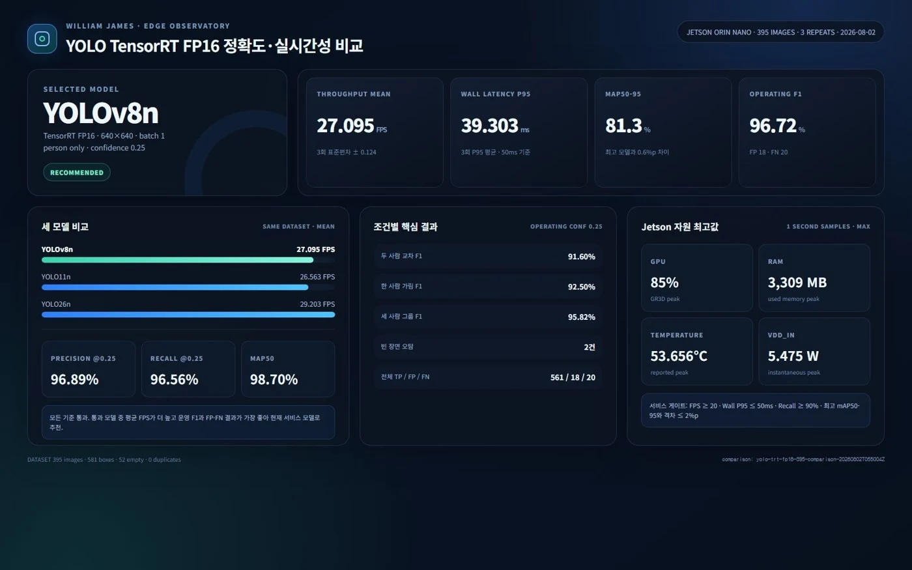
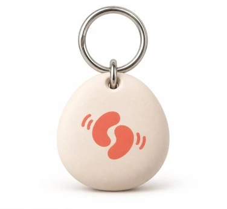
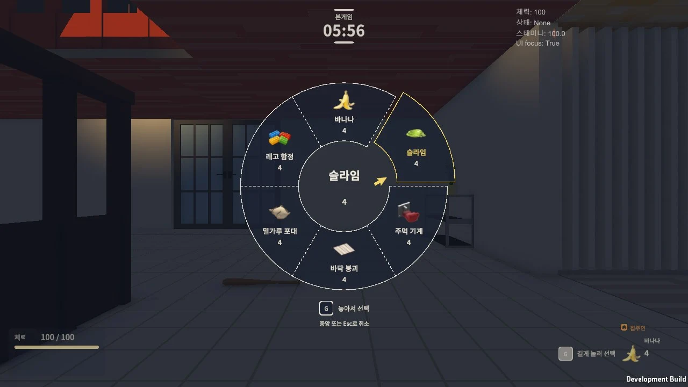

이재준 · 소프트웨어 개발자
홈캠이 놓친
웃음 6초.
제가 웃는 동안 홈캠은 영상을 남기지 않았습니다. 녹음에서 놓친 구간을 직접 표시하고 세 모델을 비교했습니다. 웃음을 더 잘 잡으면서 사람 추적에 쓸 전력을 남기는 EfficientAT을 실물 시험에 올렸습니다.
세 모델의 측정값 보기빵긋Jetson Orin Nano · 두 사람 추적 시험
| PANNs CNN10 | 12.6 W | |
|---|---|---|
| EfficientAT MN10 | 5.8 W |
같은 평가 음성에서 웃음 F1은 PANNs 0.654, EfficientAT 0.855였습니다.
프로젝트
2026
AI · 임베디드
빵긋
웃음을 감지하면서 사람도 따라가는 홈캠
오디오 모델 선정 · Jetson 벤치마크 · 기구 제작
서비스 기획 · Android
TINGLE
키링 소개팅 서비스에서 가입을 끝내는 조건
가입 정책 설계 · AI 협업 개발 · 실물 키링 검증
프론트엔드 · 금융 웹
MOA
예·적금 추천 화면에서 로그인 상태 복원하기
Vue 상품 조회 · Django 인증 API 구현
게임 · UX/UI
GetOut!
1대4 게임에서 집주인이 선택한 함정 6종 검증
함정 선택 UI 교정 · 6종 실입력 검증소개
회계학을 전공하고 빅데이터 분석을 부전공했습니다. SSAFY에서 처음 만든 서비스는 저축 계획에 맞는 예·적금을 찾아주는 MOA였습니다.
- 교육
- 삼성 청년 AI 소프트웨어 아카데미 15기
2026.01 — 현재 - 개발 경험
- Vue와 Django로 상품 조회와 인증을 연결했습니다. 빵긋에서는 Python으로 장치 로그를 수집했고, 팅글에서는 6인 팀의 PM으로 가입 정책을 정하고 Android와 키링에서 검증했습니다.